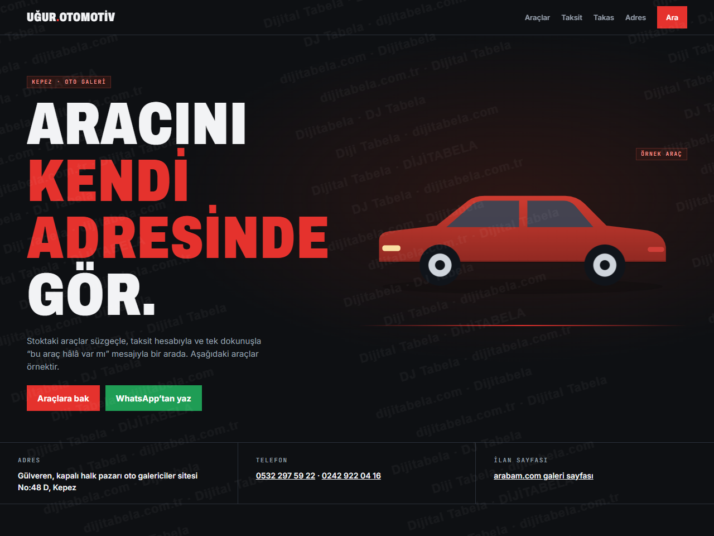
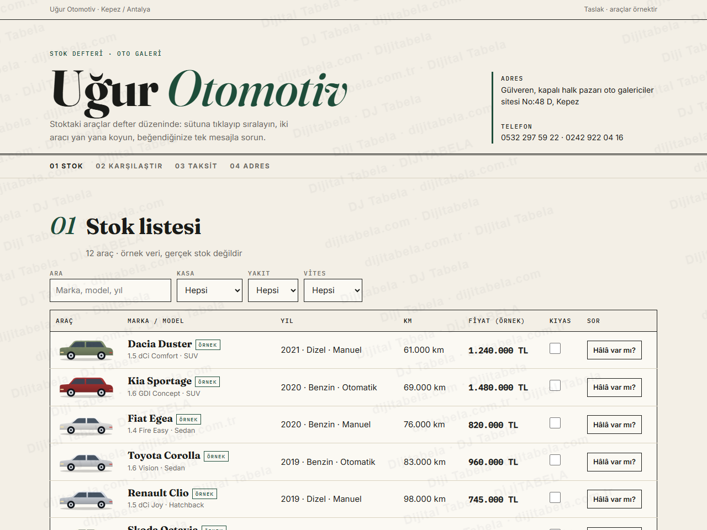
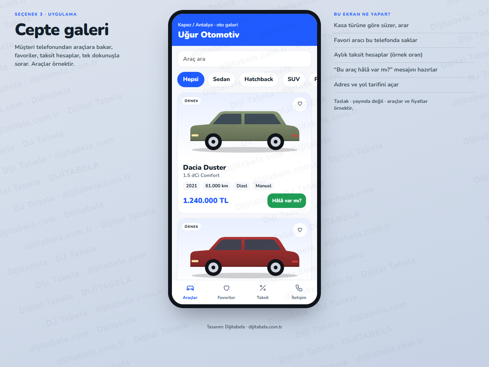

Araçlarınız ilan sayfasında değil, kendi adresinizde · 3 tasarım
Uğur Otomotiv’in herkese açık kaydını inceledik: galeri, arabam.com galeri sayfasında görünüyor (Gülveren, kapalı halk pazarı oto galericiler sitesi No:48 D, Kepez); kendi web sitesi bulamadık. Çözüm: araçlarınızın kendi adresinizde durduğu bir vitrin. Üç tasarım da çalışır durumda: araç süzgeci, taksit hesabı, takas talebi ve “bu araç hâlâ var mı” mesajı. Araçlar, fiyatlar ve oranlar örnektir; gerçek stok değildir ve hiçbir mesaj otomatik gönderilmez.

Koyu showroom, kartlı araç ızgarası, detay penceresi. Telefondan ve bilgisayardan.
Vitrin yerleşimi: kart ızgarası, detay penceresiCanlı aç →
Açık zemin, sütuna tıklayıp sıralama, iki aracı yan yana karşılaştırma.
Defter yerleşimi: tablo, karşılaştırmaCanlı aç →
Telefonda uygulama gibi: araçlar, favoriler, taksit, iletişim sekmeleri.
Uygulama yerleşimi: alt menü, kaydırmalı kartlarCanlı aç →- Araç süzgeci: kasa, yakıt, vites, fiyat ve arama ile örnek stok daraltılır
- Taksit hesabı: peşinat, vade ve oranı müşteri yazar; aylık tutar anında görünür (örnek hesap, banka teklifi değil)
- Tek mesajla sor: “bu araç hâlâ var mı” mesajı hazır gelir; müşteri kendi WhatsApp’ında gönderir
- Takas ve randevu notu: form hazır mesaj üretir, hiçbir şey otomatik gönderilmez
- Adres ve yol tarifi: haritada tek dokunuş; arabam.com galeri sayfanıza bağlantı
- Favoriler ve karşılaştırma: müşteri beğendiği araçları saklar, iki aracı yan yana görür
Kaynakta yalnız şunlar görüldü: işletme adı, adres, iki telefon ve arabam.com galeri sayfası. Araç modelleri, fiyatlar, yıllar ve faiz oranı bu taslakta örnektir ve “örnek” etiketlidir. Telefon numaraları rehber kaynaklıdır, yayından önce teyit edilir. Çalışma saati, yorum veya istatistik yazılmadı.
İş geliştirme planının yanında bu sayfa hazırlanır. Kapsam ve kesin tutar ihtiyacınıza göre yazılı netleştirilir.